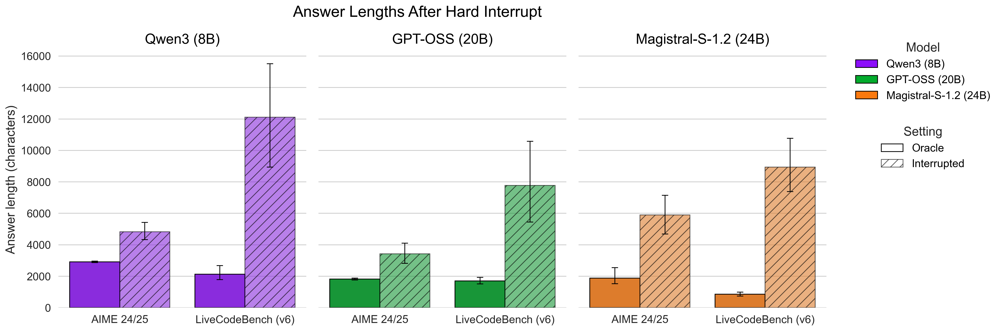
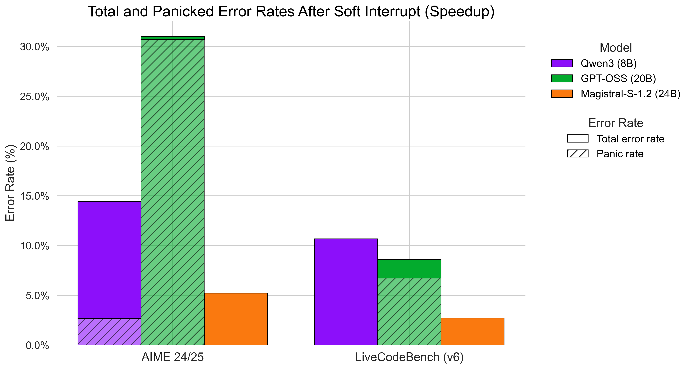
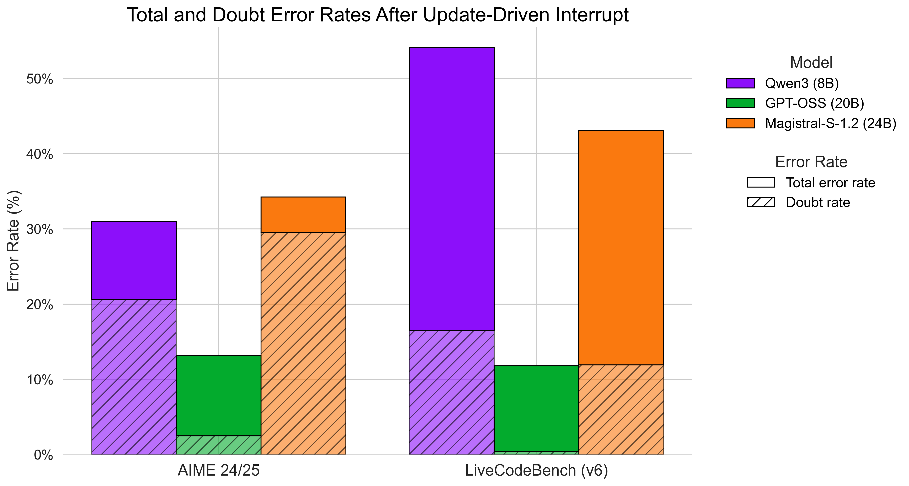

<!DOCTYPE html>
<html lang="en"></html>

<head>
    <meta charset="utf-8">
    <!-- Meta tags for social media banners, these should be filled in appropriately as they are your "business card" -->
    <!-- Replace the content tag with appropriate information -->
    <meta name="description" content="Project page for the paper “Are Large Reasoning Models Interruptible?” by Tsung-Han Wu, Mihran Miroyan, David M. Chan, Trevor Darrell, Narges Norouzi, and Joseph E. Gonzalez.">
    <meta property="og:title" content="Are Large Reasoning Models Interruptible?" />
    <meta property="og:description" content="Project page for the paper “Are Large Reasoning Models Interruptible?” by Tsung-Han Wu, Mihran Miroyan, David M. Chan, Trevor Darrell, Narges Norouzi, and Joseph E. Gonzalez." />
    <meta property="og:url" content="http://reverse-vlm.github.io" />
    <!-- Path to banner image, should be in the path listed below. Optimal dimensions are 1200X630-->
    <meta property="og:image" content="static/images/ilrm_logo.png" />
    <meta property="og:image:width" content="1200" />
    <meta property="og:image:height" content="630" />


    <meta name="twitter:title" content="Are Large Reasoning Models Interruptible?">
    <meta name="twitter:description" content="Project page for the paper “Are Large Reasoning Models Interruptible?” by Tsung-Han Wu, Mihran Miroyan, David M. Chan, Trevor Darrell, Narges Norouzi, and Joseph E. Gonzalez." />
    <!-- Path to banner image, should be in the path listed below. Optimal dimensions are 1200X600-->
    <meta name="twitter:image" content="static/images/ilrm_logo.png">
    <meta name="twitter:card" content="IRLM Project Logo highlighting interruptible large reasoning models.">
    <!-- Keywords for your paper to be indexed by-->
    <meta name="keywords"
        content="Large Reasoning Models, Interruptibility, Large Language Models">
    <meta name="viewport" content="width=device-width, initial-scale=1">


    <title>Are Large Reasoning Models Interruptible?</title>
    <!-- Standard favicon (for most browsers) -->
    <link rel="icon" type="image/png" sizes="32x32" href="/static/images/favicon/favicon-32x32.png">
    <link rel="icon" type="image/png" sizes="96x96" href="/static/images/favicon/favicon-96x96.png">
    <link rel="icon" type="image/x-icon" href="/static/images/favicon/favicon.ico">

    <!-- Apple Touch Icon (iOS / macOS Safari bookmarks) -->
    <link rel="apple-touch-icon" sizes="180x180" href="/static/images/favicon/apple-touch-icon.png">
    <!-- Progressive Web App manifest (optional) -->
    <link rel="manifest" href="/static/images/favicon/site.webmanifest">

    <link rel="stylesheet" href="static/css/bulma.min.css">
    <link rel="stylesheet" href="static/css/bulma-carousel.min.css">
    <link rel="stylesheet" href="static/css/bulma-slider.min.css">
    <link rel="stylesheet" href="static/fontawesome/css/all.min.css">
    <link rel="stylesheet" href="https://cdn.jsdelivr.net/gh/jpswalsh/academicons@1/css/academicons.min.css">
    <link rel="stylesheet" href="static/css/index.css">

    <!-- Floating TOC Styles -->
    <style>
        .floating-toc {
            position: fixed;
            left: 5%;
            top: 50%;
            transform: translateY(-50%);
            background: rgba(255, 255, 255, 0.95);
            backdrop-filter: blur(10px);
            border: 1px solid rgba(0, 0, 0, 0.1);
            border-radius: 12px;
            padding: 1rem;
            box-shadow: 0 8px 32px rgba(0, 0, 0, 0.1);
            z-index: 1000;
            max-width: 250px;
            font-size: 0.9rem;
            transition: all 0.3s ease;
        }
        
        .floating-toc:hover {
            background: rgba(255, 255, 255, 0.98);
            box-shadow: 0 12px 40px rgba(0, 0, 0, 0.15);
        }
        
        .toc-title {
            font-weight: 700;
            color: #1e293b;
            margin-bottom: 0.75rem;
            font-size: 0.85rem;
            text-transform: uppercase;
            letter-spacing: 0.05em;
        }
        
        .toc-list {
            list-style: none;
            padding: 0;
            margin: 0;
        }
        
        .toc-item {
            margin-bottom: 0.5rem;
        }
        
        .toc-link {
            color: #64748b;
            text-decoration: none;
            display: block;
            padding: 0.25rem 0;
            border-radius: 6px;
            transition: all 0.2s ease;
            line-height: 1.4;
        }
        
        .toc-link:hover {
            color: #3b82f6;
            background: rgba(59, 130, 246, 0.1);
            padding-left: 0.5rem;
        }
        
        .toc-link.active {
            color: #1e293b;
            font-weight: 600;
            background: rgba(59, 130, 246, 0.15);
            padding-left: 0.5rem;
        }
        
        @media (max-width: 1200px) {
            .floating-toc {
                display: none;
            }
        }
    </style>

    <script src="https://ajax.googleapis.com/ajax/libs/jquery/3.5.1/jquery.min.js"></script>
    <script src="https://documentcloud.adobe.com/view-sdk/main.js"></script>
    <script defer src="static/fontawesome/js/fontawesome.min.js"></script>
    <script src="static/js/bulma-carousel.min.js"></script>
    <script src="static/js/bulma-slider.min.js"></script>
    <script src="static/js/index.js"></script>
    
    <!-- MathJax for LaTeX rendering -->
    <script>
        MathJax = {
            tex: {
                inlineMath: [['$', '$'], ['\\(', '\\)']],
                displayMath: [['$$', '$$'], ['\\[', '\\]']]
            }
        };
    </script>
    <script id="MathJax-script" async src="https://cdn.jsdelivr.net/npm/mathjax@3/es5/tex-mml-chtml.js"></script>
</head>

<body>
    <!-- Floating Table of Contents -->
    <nav class="floating-toc">
        <div class="toc-title">Contents</div>
        <ul class="toc-list">
            <li class="toc-item"><a href="#overview" class="toc-link">Overview</a></li>
            <li class="toc-item"><a href="#problem-setup" class="toc-link">Problem Setup</a></li>
            <li class="toc-item"><a href="#time-constrained" class="toc-link">Time-Constrained Interrupts</a></li>
            <li class="toc-item"><a href="#update-driven" class="toc-link">Update-Driven Interrupts</a></li>
            <li class="toc-item"><a href="#scaling-law" class="toc-link">Scaling Law Analysis</a></li>
        </ul>
    </nav>

    <section class="hero hero--landing" id="overview">
        <div class="hero-body" style="padding-top: 1.5rem;">
            <div class="container is-max-desktop">
                <div class="columns is-centered is-vcentered hero-header">
                    <div class="column is-narrow hero-logo-column">
                        
                        <div class="hero-logo-tooltip">
                            Think of The Great Wave as a metaphor for dynamic context — the chatbot has to surf the changing tides of conversation, staying robust even as the waves keep moving.
                        </div>
                    </div>
                    <div class="column has-text-centered hero-text-column">
                        <h1 class="title is-2 publication-title hero-title">Are Large Reasoning Models Interruptible?</h1>
                    </div>
                </div>
                <div class="container is-max-desktop">
                    <div class="columns is-centered">
                        <div class="column has-text-centered">
                            <div class="is-size-6 publication-authors authors-inline" style="margin-top: -1.5rem;">
                                <!-- Paper authors -->
                                <span class="author-block"><a href="https://patrickthwu.com/" target="_blank" rel="noopener">Tsung-Han Wu<sup class="has-text-danger">*</sup></a></span>
                                <span class="author-block"><a href="https://mmiroyan.github.io/" target="_blank" rel="noopener">Mihran Miroyan<sup class="has-text-danger">*</sup></a></span>
                                <span class="author-block"><a href="https://dchan.cc/" target="_blank" rel="noopener">David M. Chan</a></span>
                                <span class="author-block"><a href="https://people.eecs.berkeley.edu/~trevor/" target="_blank" rel="noopener">Trevor Darrell</a></span>
                                <span class="author-block"><a href="https://nargesnorouzi.me/" target="_blank" rel="noopener">Narges Norouzi</a></span>
                                <span class="author-block"><a href="https://people.eecs.berkeley.edu/~jegonzal/" target="_blank" rel="noopener">Joseph E. Gonzalez</a></span>
                            </div>
                            <div class="is-size-6 publication-authors" style="margin-top: 0.5rem;">
                                <span class="author-block"><strong>UC Berkeley</strong></span>
                                <br>
                                <span class="author-block"><sup class="has-text-danger">*</sup>Equal contribution</span>
                            </div>

                            <div class="column has-text-centered">
                                <div class="publication-links">

                                    <span class="link-block">
                                        <a href="https://arxiv.org/abs/2504.13169" target="_blank" class="external-link button is-normal is-rounded is-dark">
                                            <span class="icon">
                                                <i class="ai ai-arxiv"></i>
                                            </span>
                                            <span>arXiv</span>
                                        </a>
                                    </span>
                                    <!-- Model/Dataset Button -->
                                    <span class="link-block">
                                        <a href="https://huggingface.co/collections/tsunghanwu/reverse-67f410b5d147edf2ed7817ae" target="_blank" class="external-link button is-normal is-rounded is-dark">
                                            <span class="icon">
                                                
                                            </span>
                                            <span>Dataset</span>
                                        </a>
                                    </span>

                                    <!-- Code Button -->
                                    <span class="link-block">
                                        <a href="https://github.com/tsunghan-wu/reverse_vlm" target="_blank" class="external-link button is-normal is-rounded is-dark">
                                            <span class="icon">
                                                <i class="fa-brands fa-github"></i>
                                            </span>
                                            <span>Code</span>
                                        </a>
                                    </span>
                                </div>
                                <br>
                                <!-- <p>
                                    <strong>TL;DR: </strong> We test SOTA reasoning models under <strong>mid-thinking stops, hurry-ups, and info updates</strong>, uncovering three failure modes.
                                </p> -->
                                 <div class="tldr-callout" role="note" aria-label="TLDR summary" style="margin-top: -1rem;">
                                     <div class="tldr-header">
                                       <!-- <span class="tldr-badge">TL;DR</span> -->
                                       <p class="tldr-lede">We are the first to test SOTA reasoning models under real-world interruptions and find three failure modes.</p>
                                     </div>
                                     <ul class="tldr-failures">
                                        <li class="failure-item">
                                            <span class="failure-title">Hard Stop → Reasoning Leakage</span>
                                            <span class="failure-desc">Spill unfinished thoughts into answers,<br>failing to actually save users' time</span>
                                          </li>
                                          <li class="failure-item">
                                            <span class="failure-title">Hurry Up → Panic</span>
                                            <span class="failure-desc">Rush to answer directly with unfinished reasoning, hurting accuracy</span>
                                          </li>
                                          <li class="failure-item">
                                            <span class="failure-title">Info Updates → Self-doubt</span>
                                            <span class="failure-desc">Can't adapt to new information from users<br>when conflicting with existing thoughts</span>
                                          </li>
                                     </ul>
                                   </div>
                            </div>
                        </div>
                    </div>
                </div>
                    
                <div class="carousel-container" style="position: relative; display: flex; align-items: center; justify-content: center; margin: 0rem 0;">
                    <!-- Left Arrow -->
                    <button class="carousel-arrow carousel-arrow-left" style="background: none; border: none; font-size: 1.5rem; color: #666; cursor: pointer; margin-right: 1rem;">‹</button>
                    
                     <!-- Carousel Content - Sliding Panels -->
                     <div class="carousel-content" style="position: relative; width: 850px; height: 400px; overflow: hidden; margin: 0 auto;">
                         <div class="carousel-track" style="position: absolute; top: 0; left: 0; width: 2550px; height: 100%; transition: left 0.6s cubic-bezier(0.4, 0, 0.2, 1);">
                             <div class="carousel-panel" style="float: left; width: 850px; height: 100%; background: white; text-align: center; padding: 0.5rem;">
                                 <div style="background: white; border-radius: 4px; height: 360px; display: flex; align-items: center; justify-content: center;">
                                     
                                 </div>
                                 <div style="text-align: center; font-weight: 500; color: #333;">Hard Stop → Reasoning Leakage</div>
                             </div>
                             <div class="carousel-panel" style="float: left; width: 850px; height: 100%; background: white; text-align: center; padding: 0.5rem;">
                                 <div style="background: white; border-radius: 4px; height: 360px; display: flex; align-items: center; justify-content: center;">
                                     
                                 </div>
                                 <div style="text-align: center; font-weight: 500; color: #333;">Hurry Up → Panic</div>
                             </div>
                             <div class="carousel-panel" style="float: left; width: 850px; height: 100%; background: white; text-align: center; padding: 0.5rem;">
                                 <div style="background: white; border-radius: 4px; height: 360px; display: flex; align-items: center; justify-content: center;">
                                     
                                 </div>
                                 <div style="text-align: center; font-weight: 500; color: #333; ">Info Update → Self-doubt</div>
                             </div>
                         </div>
                     </div>
                    
                    <!-- Right Arrow -->
                    <button class="carousel-arrow carousel-arrow-right" style="background: none; border: none; font-size: 1.5rem; color: #666; cursor: pointer; padding: 1rem; margin-left: 1rem;">›</button>
                </div>
                
                <!-- Pagination Indicators -->
                <div class="carousel-pagination" style="display: flex; justify-content: center; gap: 0.5rem; margin-top: 1rem;">
                    <span class="pagination-dot active" style="width: 12px; height: 3px; background: #000; border-radius: 2px; display: inline-block;"></span>
                    <span class="pagination-dot" style="width: 12px; height: 3px; background: #ccc; border-radius: 2px; display: inline-block;"></span>
                    <span class="pagination-dot" style="width: 12px; height: 3px; background: #ccc; border-radius: 2px; display: inline-block;"></span>
                    <!-- <span class="pagination-dot" style="width: 12px; height: 3px; background: #ccc; border-radius: 2px; display: inline-block;"></span> -->
                    <!-- <span class="pagination-dot" style="width: 12px; height: 3px; background: #ccc; border-radius: 2px; display: inline-block;"></span> -->
                </div>
            </div>

        </div>
    </section>


    <!-- <section class="section hero hero--overview" style="margin-top: -2rem;">
        <div class="container is-max-desktop">
          <div class="columns is-centered has-text-centered">
            <div class="column is-full">
      
              <h2 class="title is-4" style="margin-bottom: 1rem;">
                Interruptible Models? Not Really.
              </h2>
      
              <div class="content has-text-justified" style="margin-bottom: 1.5rem;">
                <p>
                    We evaluate SOTA reasoning models under three common mid-thought interruptions and find consistent failure modes:
                </p>
                <ul style="margin-top: 1rem;">
                  <li><strong>Hard stop → Reasoning leakage:</strong> Answer spills incomplete chains.</li>
                  <li><strong>Hurry up → Panic:</strong> Time pressure causes rushed, low-confidence guesses.</li>
                  <li><strong>Late update → Self-doubt:</strong> Unplanned edits derail the chain of thought.</li>
                </ul>
              </div>
      
              <div class="content has-text-centered" style="margin-top: 2rem;">
      
                <div class="carousel results-carousel">
                  <div class="item">
                    <h4 class="title is-6">Leakage Rate</h4>
                    <div class="carousel-image">
                      
                    </div>
                  </div>
                  <div class="item">
                    <h4 class="title is-6">Panic Rate</h4>
                    <div class="carousel-image">
                      
                    </div>
                  </div>
                  <div class="item">
                    <h4 class="title is-6">Doubt Rate</h4>
                    <div class="carousel-image">
                      
                    </div>
                  </div>
                </div>
              </div>
      
            </div>
          </div>
        </div>
      </section> -->
      
    <section class="section" id="problem-setup">
        <div class="container is-max-desktop">
            <div class="columns is-centered has-text-centered">
                <div class="column is-full">
                    <h2 class="title is-4">How Do LRMs Perform In Dynamic Worlds? 
                    </h2>
                </div>
            </div>
            <p>
                In the real world, users don’t just sit and wait for a large reasoning model (LRM) to finish: they interrupt, rush, and revise. Because LRM reasoning takes time, models need to handle updates mid-inference. We introduce a new evaluation suite that test how well LRMs cope with interruptions and dynamic context changes across math and coding tasks. While today’s models show some any-time ability, they still struggle to stay stable under real-world dynamics.</p>
            <br>
            <div class="item is-vcentered" style="text-align: center; width: 90%; margin: 0 auto;">
                
            </div>
            <br>
            <p>We study three major types of interruptions: hard stop, hurry up, and info update. The evaluation protocol is shown above: we run a single inference session to obtain the full reasoning chain $r_X$ and then interrupt it at different stages of the reasoning process:</p>
            <ul style="list-style-type: disc; padding-left: 2rem; margin-top: 0.5rem;">
                <li><strong>Hard Stop → </strong> $i=\langle\text{end-think}\rangle$ or $\langle\text{force-answer}\rangle$; $r_X' = \emptyset$</li>
                <li><strong>Hurry Up → </strong> $i=\text{Please provide the answer as soon as possible.}$</li>
                <li><strong>Info Update →</strong> $i=\text{Update information}$</li>
            </ul>
            <p style="margin-top: 0.5rem;">For hard stop and hurry up evaluations, we directly utilized existing math and coding datasets, including GSM8K, MATH-500, AIME 24/25, and LiveCodeBench-v6. For the info update track specifically, we augmented these datasets to create a new collection containing 1401 reasoning problems with multiple conflicting information updates.</p>
            <br>
            <p>See more about out dataset (a Gallery below).</p>
        </div>
    </section>

    <section class="section" id="time-constrained">
        <div class="container is-max-desktop">
            <div class="columns is-centered has-text-centered">
                <div class="column is-full">
                    <h2 class="title is-4">How Do LRMs Behave Under Time-Constrained Interruptions?</h2>
                </div>
            </div>
            
            <!-- Hard Stop Subsection -->
            <div class="columns is-centered">
                <div class="column is-full">
                    <h3 class="title is-5" style="margin-top: 2rem; margin-bottom: 1rem;">(1) Hard Stop: Are LRMs anytime models?</h3>
                    <p>When users abruptly interrupt the model's reasoning process, we observe significant reasoning leakage where models spill their incomplete thoughts into the final answer.</p>
                </div>
            </div>
            
            <!-- Hurry Up Subsection -->
            <div class="columns is-centered">
                <div class="column is-full">
                    <h3 class="title is-5" style="margin-top: 2rem; margin-bottom: 1rem;">(2) Hurry Up: Can we reduce LRM's computes on-the-fly?</h3>
                    <p>Under time pressure, models exhibit panic behavior, rushing to provide answers without completing their reasoning process, leading to decreased accuracy.</p>
                </div>
            </div>
        </div>
    </section>

    <section class="section" id="update-driven">
        <div class="container is-max-desktop">
            <div class="columns is-centered has-text-centered">
                <div class="column is-full">
                    <h2 class="title is-4">How Do LRMs Behave Under Update-Driven Interruptions?</h2>
                </div>
            </div>
            <!-- Hard Stop Subsection -->
            <div class="columns is-centered">
                <div class="column is-full">
                    <h3 class="title is-5" style="margin-top: 2rem; margin-bottom: 1rem;">(1) What's the best way to provide updates to LRMs?</h3>
                    <p>When users abruptly interrupt the model's reasoning process, we observe significant reasoning leakage where models spill their incomplete thoughts into the final answer.</p>
                </div>
            </div>
            
            <!-- Hurry Up Subsection -->
            <div class="columns is-centered">
                <div class="column is-full">
                    <h3 class="title is-5" style="margin-top: 2rem; margin-bottom: 1rem;">(2) What happens if we combine updates with time pressure?</h3>
                    <p>Under time pressure, models exhibit panic behavior, rushing to provide answers without completing their reasoning process, leading to decreased accuracy.</p>
                </div>
            </div>
        </div>
    </section>

    <section class="section" id="scaling-law">
        <div class="container is-max-desktop">
            <div class="columns is-centered has-text-centered">
                <div class="column is-full">
                    <h2 class="title is-4">Does scaling-law still hold here?</h2>
                </div>
            </div>
            <!-- Hard Stop Subsection -->
            <div class="columns is-centered">
                <div class="column is-full">
                    <h3 class="title is-5" style="margin-top: 2rem; margin-bottom: 1rem;">(1) Time-Constrained Interruptions</h3>
                </div>
            </div>
            
            <!-- Hurry Up Subsection -->
            <div class="columns is-centered">
                <div class="column is-full">
                    <h3 class="title is-5" style="margin-top: 2rem; margin-bottom: 1rem;">(2) Update-Driven Interruptions</h3>
                </div>
            </div>
        </div>
    </section>


    <!--BibTex citation -->
    <section class="section" id="BibTeX">
        <div class="container is-max-desktop content">
            <div style="display: flex; justify-content: space-between; align-items: center; margin-bottom: 1rem;">
                <h3 class="title" style="margin-bottom: 0;">BibTeX</h3>
                <button id="copy-bibtex" class="button is-small is-light" style="border: 1px solid #ddd; background: #f8f9fa;">
                    <span class="icon is-small">
                        <i class="fas fa-copy"></i>
                    </span>
                    <span>Copy</span>
                </button>
            </div>
            <pre id="bibtex-content" style="position: relative; background: #f8f9fa; border: 1px solid #e9ecef; border-radius: 6px; padding: 1rem; margin: 0;"><code>@misc{wu2025interruptible,
  title={Are Large Reasoning Models Interruptible?},
  author={Wu, Tsung-Han and Miroyan, Mihran and Chan, David M and Darrell, Trevor and Norouzi, Narges and Gonzalez, Joseph E},
  note={Project page},
  year={2025}
}</code></pre>
        </div>
    </section>
    <!--End BibTex citation -->


    <footer class="footer">
        <div class="container">
            <div class="columns is-centered">
                <div class="column is-8">
                    <div class="content">

                        <p>
                            This page was built using the <a
                                href="https://github.com/eliahuhorwitz/Academic-project-page-template"
                                target="_blank">Academic Project Page Template</a> which was adopted from the <a
                                href="https://nerfies.github.io" target="_blank">Nerfies</a> project page.
                            You are free to borrow the of this website, we just ask that you link back to this page in
                            the footer. <br> This website is licensed under a <a rel="license"
                                href="http://creativecommons.org/licenses/by-sa/4.0/" target="_blank">Creative
                                Commons Attribution-ShareAlike 4.0 International License</a>.
                        </p>

                    </div>
                </div>
            </div>
        </div>
    </footer>

    <!-- Statcounter tracking code -->

    <!-- You can add a tracker to track page visits by creating an account at statcounter.com -->

    <!-- End of Statcounter Code -->

    <script>
        // Carousel functionality
        let currentSlide = 0;
        const totalSlides = 3;
        const images = [
            'static/images/answer_length.png',
            'static/images/answer_length.png', 
            'static/images/answer_length.png'
        ];
        const labels = ['Hard Stop → Reasoning Leakage', 'Hurry Up → Panic', 'Info Update → Self-doubt'];

        function updateCarousel() {
            const track = document.querySelector('.carousel-track');
            const dots = document.querySelectorAll('.pagination-dot');
            
            // Slide the track to show the current slide
            const leftPosition = -currentSlide * 850; // 850px is the width of each panel
            track.style.left = leftPosition + 'px';
            
            // Debug: log the position to ensure it's correct
            console.log(`Slide ${currentSlide + 1}: moving to position ${leftPosition}px`);
            
            // Update pagination dots
            dots.forEach((dot, index) => {
                if (index === currentSlide) {
                    dot.style.background = '#000';
                } else {
                    dot.style.background = '#ccc';
                }
            });
        }

        // Add event listeners to arrows
        document.querySelector('.carousel-arrow-left').addEventListener('click', () => {
            currentSlide = (currentSlide - 1 + totalSlides) % totalSlides;
            updateCarousel();
        });

        document.querySelector('.carousel-arrow-right').addEventListener('click', () => {
            currentSlide = (currentSlide + 1) % totalSlides;
            updateCarousel();
        });

        // Add event listeners to pagination dots
        document.querySelectorAll('.pagination-dot').forEach((dot, index) => {
            dot.addEventListener('click', () => {
                currentSlide = index;
                updateCarousel();
            });
        });

        // Auto-play functionality
        let autoPlayInterval;
        
        function startAutoPlay() {
            autoPlayInterval = setInterval(() => {
                currentSlide = (currentSlide + 1) % totalSlides;
                updateCarousel();
            }, 3000); // Change slide every 3 seconds
        }
        
        function stopAutoPlay() {
            clearInterval(autoPlayInterval);
        }
        
        // Pause auto-play when user interacts with carousel
        document.querySelector('.carousel-container').addEventListener('mouseenter', stopAutoPlay);
        document.querySelector('.carousel-container').addEventListener('mouseleave', startAutoPlay);
        
        // Initialize carousel
        updateCarousel();
        startAutoPlay();
        
        // Floating TOC functionality
        function updateActiveTOCLink() {
            const sections = document.querySelectorAll('section[id]');
            const tocLinks = document.querySelectorAll('.toc-link');
            
            let currentSection = '';
            
            sections.forEach(section => {
                const sectionTop = section.offsetTop;
                const sectionHeight = section.clientHeight;
                if (window.scrollY >= (sectionTop - 200)) {
                    currentSection = section.getAttribute('id');
                }
            });
            
            tocLinks.forEach(link => {
                link.classList.remove('active');
                if (link.getAttribute('href') === '#' + currentSection) {
                    link.classList.add('active');
                }
            });
        }
        
        // Update active link on scroll
        window.addEventListener('scroll', updateActiveTOCLink);
        
        // Smooth scrolling for TOC links
        document.querySelectorAll('.toc-link').forEach(link => {
            link.addEventListener('click', function(e) {
                e.preventDefault();
                const targetId = this.getAttribute('href').substring(1);
                const targetSection = document.getElementById(targetId);
                if (targetSection) {
                    targetSection.scrollIntoView({
                        behavior: 'smooth',
                        block: 'start'
                    });
                }
            });
        });
        
        // Initialize active link
        updateActiveTOCLink();
        
        // BibTeX copy functionality
        function setupBibtexCopy() {
            const copyButton = document.getElementById('copy-bibtex');
            if (!copyButton) {
                console.log('Copy button not found');
                return;
            }
            
            copyButton.addEventListener('click', function(e) {
                e.preventDefault();
                const bibtexText = `@misc{wu2025interruptible,
  title={Are Large Reasoning Models Interruptible?},
  author={Wu, Tsung-Han and Miroyan, Mihran and Chan, David M and Darrell, Trevor and Norouzi, Narges and Gonzalez, Joseph E},
  note={Project page},
  year={2025}
}`;
                
                // Try modern clipboard API first
                if (navigator.clipboard && navigator.clipboard.writeText) {
                    navigator.clipboard.writeText(bibtexText).then(function() {
                        showCopySuccess(copyButton);
                    }).catch(function(err) {
                        console.error('Clipboard API failed:', err);
                        fallbackCopy(bibtexText, copyButton);
                    });
                } else {
                    // Fallback for older browsers
                    fallbackCopy(bibtexText, copyButton);
                }
            });
        }
        
        function showCopySuccess(button) {
            const originalHTML = button.innerHTML;
            button.innerHTML = '<span class="icon is-small"><i class="fas fa-check"></i></span><span>Copied!</span>';
            button.style.background = '#d4edda';
            button.style.borderColor = '#c3e6cb';
            button.style.color = '#155724';
            
            setTimeout(function() {
                button.innerHTML = originalHTML;
                button.style.background = '#f8f9fa';
                button.style.borderColor = '#ddd';
                button.style.color = '';
            }, 2000);
        }
        
        function fallbackCopy(text, button) {
            const textArea = document.createElement('textarea');
            textArea.value = text;
            textArea.style.position = 'fixed';
            textArea.style.left = '-999999px';
            textArea.style.top = '-999999px';
            document.body.appendChild(textArea);
            textArea.focus();
            textArea.select();
            
            try {
                document.execCommand('copy');
                showCopySuccess(button);
            } catch (err) {
                console.error('Fallback copy failed:', err);
                alert('Failed to copy. Please select and copy manually.');
            }
            
            document.body.removeChild(textArea);
        }
        
        // Initialize when DOM is ready
        if (document.readyState === 'loading') {
            document.addEventListener('DOMContentLoaded', setupBibtexCopy);
        } else {
            setupBibtexCopy();
        }
    </script>

</body>

</html>
